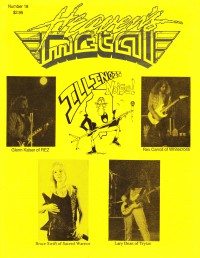

Heaven's Metal, Jun / Jul 1988, #18
| Cover |
|---|
|  |
| Writers in this Issue |
| Bloodgood, Michael Hopkins, Bob Knox, Caroline Loke, Karen Millican, Maury Nordström, Daniel Q-Pek, Paul Schmutzer, Steve Van Pelt, Doug |
Illinois Noise
Article:- "Rez "Screams" Out With New Release, New Label" by Karen Loke
- "Taking It To The Limit With Whitecross" by Caroline Knox
- "The Secret of Their Success" by Steve Schmutzer
- "Sequencers, Metal, and Trytan" by Bob Hopkins
- "Running Into Trouble" by Bob Hopkins
- "Music Man on the Move" by Steve SchmutzerCaesar Kalinowski, Graceland Records
- "Leviticus In The USA"
- various artists - East Coast Metal by Doug Van Pelt
- Vengeance Rising - Human Sacrifice by Doug Van Pelt
- Sacred Warrior - Rebellion by Doug Van Pelt
- The Metal Monks - When The Son Goes Down by Paul Q-Pek
- Sentry - Breakin' Free by Caroline Knox
- Retrace - demo by Doug Van Pelt
- Resurrection Band - Silence Screams by Doug Van Pelt
- Paradox - Power and Glory by Doug Van Pelt
- Bloodgood - Rock in a Hard Place by Doug Van Pelt
- Xalt - Dark War by Doug Van Pelt
- Angelica - demo by Doug Van Pelt
- Idle Cure - Tough Love by Doug Van Pelt
- Contagious - Free Indeed by Maury Millican
- Chosen (CO) - Solid Rock by Doug Van Pelt
- Straightway (TX) - One Way To Heaven by Doug Van Pelt
- Divine Right - Powerchange by Maury Millican
- Revelation (FL metal) - Spiritual Wind by Doug Van Pelt
- Force Three - Warrior Of Light by Paul Q-Pek
- KIGA - 5-song demo by Paul Q-Pek
- Mercy Rule - demo by Paul Q-Pek, Doug Van Pelt
- Phil Accardi's Chalice - Take Control by Doug Van Pelt
- Zion - Thunder From the Mountain by Doug Van Pelt
- Jerusalem - Dancing On The Head Of The Serpent by Doug Van Pelt
- Whitecross - Hammer and Nail by Doug Van Pelt
- various artists - Metal Mardi Gras [video] by Doug Van Pelt
- Chosen Stranger - 7" - Lonely World + Rock The Light by Doug Van Pelt
- "The Best White Metal Show Ever!" by Daniel Nordström
- "Cornerstone 88"Cornerstone 88
- "What's Wrong With Christian Music: The Fans and The Bands" by Michael Bloodgood
Relevant Links
For more information about HM visit .You may be able to find HM in a library near you: Worldcat

© 2011 CMnexus. Last updated September 2019. Contact: editor -AT- cmnexus -DØT- org About